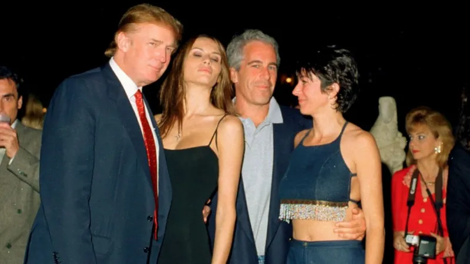
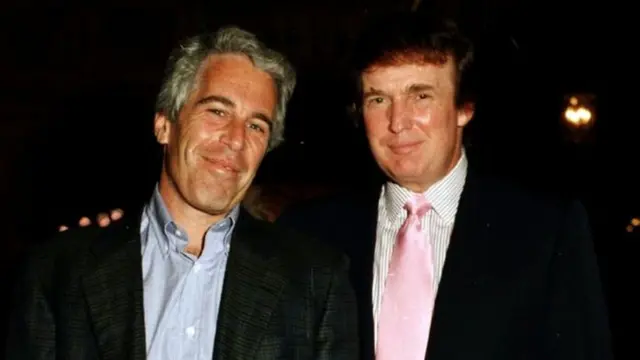

Jeffrey Epstein: O que estão dizendo seus amigos famosos?
Política | 14/02/2026

Jeffrey Epstein, o financista americano acusado de comandar uma rede de exploração sexual de menores, sempre esteve cercado por pessoas ricas e poderosas.
Diz-se que ele cultivou ativamente esses relacionamentos, afirmando em um perfil de 2002: "Eu invisto em pessoas, seja na política ou na ciência. É o que eu faço."
Alguns permaneceram leais ao gestor de fundos de investimento mesmo depois de ele se declarar culpado de aliciar uma menor para prostituição.
Mas o que estão dizendo agora os amigos famosos do Sr. Epstein?
Presidente Donald Trump

Como eles se conhecem?
Donald Trump e Jeffrey Epstein mantiveram uma relação de proximidade social que durou pelo menos 15 anos, frequentando os mesmos círculos da elite. Epstein visitou o clube Mar-a-Lago de Trump em Palm Beach em duas ocasiões registradas, nos anos de 1997 e 2000, onde chegaram a posar para fotos juntos. "É muito divertido estar com ele. Dizem até que ele gosta de mulheres bonitas tanto quanto eu, e muitas delas são bem jovens. Sem dúvida, Jeffrey aproveita a vida social", afirma Trump em entrevista. A conexão entre eles era próxima o suficiente para que a agenda pessoal de Epstein contivesse 14 números de telefone vinculados a Trump, sua esposa Melania e membros de sua equipe, além de uma das acusadoras de Epstein ter conhecido o financista justamente enquanto trabalhava no clube de Trump no verão de 2000.
O que ele está dizendo agora?
Após o surgimento das acusações criminais, Trump mudou radicalmente seu discurso e buscou se distanciar totalmente de Epstein. Por meio de seu advogado, Alan Garten, a posição oficial da Organização Trump passou a ser a de que o ex-presidente não tinha qualquer relação com Epstein e que não possuía nenhum conhecimento sobre a conduta ou as atividades ilícitas do financista. Além disso, a defesa afirmou que Epstein foi banido de Mar-a-Lago assim que as acusações criminais foram apresentadas contra ele, reforçando a narrativa de rompimento total.